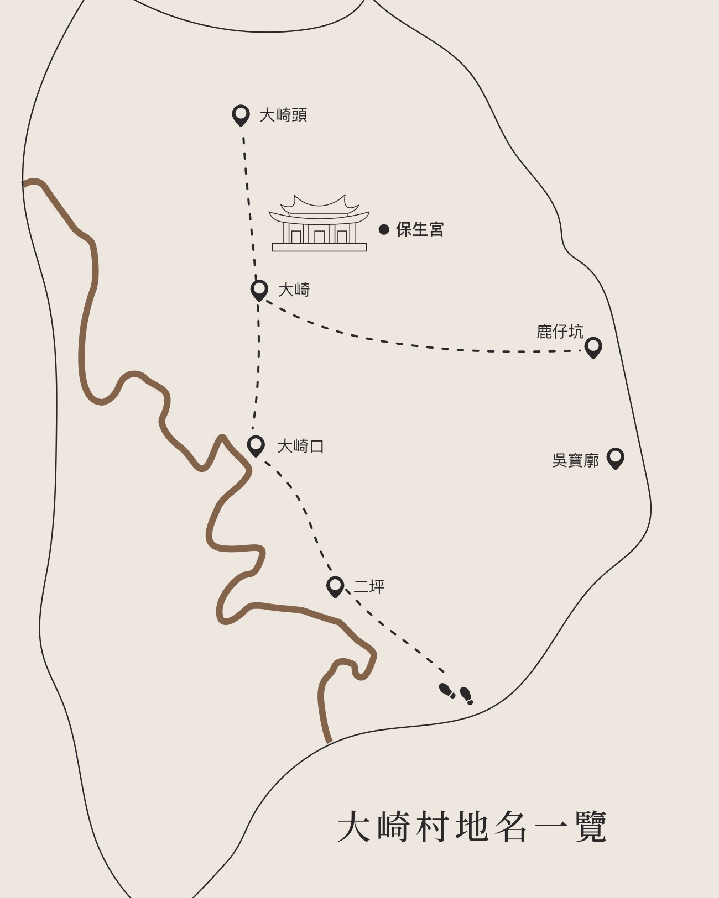

地名是地方的座標
這些地名指向道路、坡地、河階、坑谷、農作、水源與信仰中心，也指向大崎村在科學園區擴建前後的空間記憶。
「崎」是坡；「坑」是兩山之間的谷地；老地名保存了地方人走路、耕作與聚會的方式。
老地名保存了地方人的行路方式、地形感與生活經驗。本頁將原 PDF 的「大崎村地名一覽」拆成地圖與地名卡片，方便上網閱讀。

這些地名指向道路、坡地、河階、坑谷、農作、水源與信仰中心，也指向大崎村在科學園區擴建前後的空間記憶。
距離大崎村落約 1080 公尺，原有寶山路（現今園區二路、園區三路）與雙園路交叉口，雙園路左側，大崎頭為新竹市進入大崎村的前端，因而稱名「大崎頭」，是以上坡路段之初段命名，此地區為大崎到大崎村的路線，是日治時期農產品運到新竹市區販賣必經之路。
現況：已於 2008 年因竹科三期開發徵收，傳統聚落屋舍田地均拆除剷平，目前為竹科三期之園區三、五路拆遷之安遷社區，原有居民多已搬離。
距離大崎村落約 1050 公尺，靠近寶山交流道，大雅路經過此地，聚落內建有二坪橋。有客雅溪上游支流經過，因位於平坦的河階面，客語中「坪」意「平坦」，指地勢平坦開闊之地，聚落位於河階第二街面上，因而命名「二坪」。
現況：二坪聚落一帶已開發為新型大型社區，包括新竹山莊家園社區、新竹山莊安居社區，近期更有大量新社區興建中，未來會有更多的新居民搬入大崎村。
距離大崎村落約 530 公尺，有一公車站牌「大崎口」（新竹客運三峰線 5602）於三峰路二段與大雅一街交叉路口。聚落內有一埤塘為灌溉之水源。居民多種植稻米、綠竹筍、玉米等農作物。
指大崎村主要村落，客語的「崎」即「坡」之意，轉折西行，地形崎嶇，坡度明顯，因而名「大崎」。清嘉慶年間有漢人郭陳蘇三姓族人於此設「大崎隘」開墾拓墾防守，漸漸形成聚落，道光 17 年（1837）有墾戶林永陞、廖記、林惠香、楊源興、楊昆裕、張阿運等於此地進行開墾，至清末設「大崎莊」。境內有保生宮座落於坡地上，主祀保生大帝。住戶多座落於小山坡上，居民耕作農產品以稻米、綠竹筍、玉米為主。
現況：大崎口與大崎已被劃入寶山二期擴建案範圍內，區內所有住戶於 2022 年 3 月全數搬離，四月開始由新竹科學園區管理局點收，將作為先進廠房興建用地。
位於大崎村與金山里交界處，為水仙崙山西側大崎山之間的鞍部，為寶山鄉與新竹市之間的交通要衝。「鹿仔」之起源有兩種：其一：早期此地多鹿，因而稱為鹿仔坑，其二，此地為金山面、柴梳山地區通往寶山、北埔主要道「路」，故名「路（鹿）仔」。此地地勢較低，東西開闊，故名「坑」。客語中的「坑」指兩山之間坑谷地區，中間或有溪流通過。道光十八年（1838）即有李姓墾戶於此地開墾。
現況：本區已被劃入新竹科學園區內，興建廠房與道路，園區二路左側之商戶與住家也於寶山擴建計畫案中遭到徵收。
大崎村與金山面交界之處，為水仙崙山之分歧。相傳有吳寶此人在此守隘，廓為客語之山巔之意，故稱此山頭為「吳寶廓」。
現況：原有的寶山路，現今的園區二路經過此地，大部分地區已徵收興建科學園區廠房。